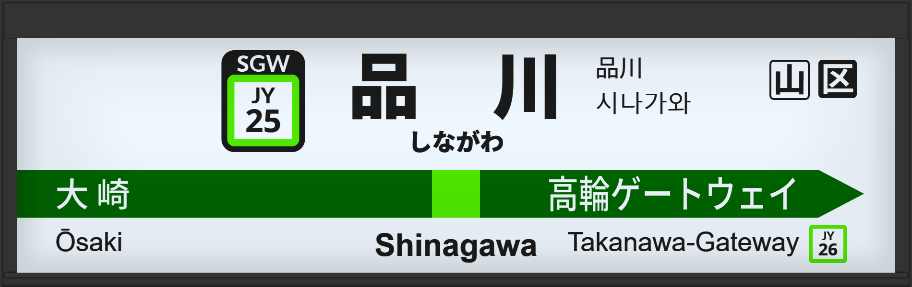

| ←大崎 | ■ 山手線 | 高輪ゲートウェイ→ |
|---|
1998年7月に初期型ATOS放送を導入。
2006年頃には旧型に更新される。
2009年12月には常磐改良型に更新される。
2016年2月に宇都宮型に更新、2番線の声優が津田英治氏から田中一永氏に交代。
2020年2月に宇都宮改良型に更新。
2021年12月には外回りのホームが2番線から3番線に移動。
| 1 | ■ 山手線 東京・上野方面 |
1番線接近放送 |
放送は「」です。 接近放送の文面が「黄色い線の内側まで～」でした。 |
|---|---|---|---|
| 旧2 | ■ 山手線 渋谷・新宿方面 |
2番線接近放送 |
放送は「」です。 接近放送の文面が「黄色い線の内側まで～」でした。 |